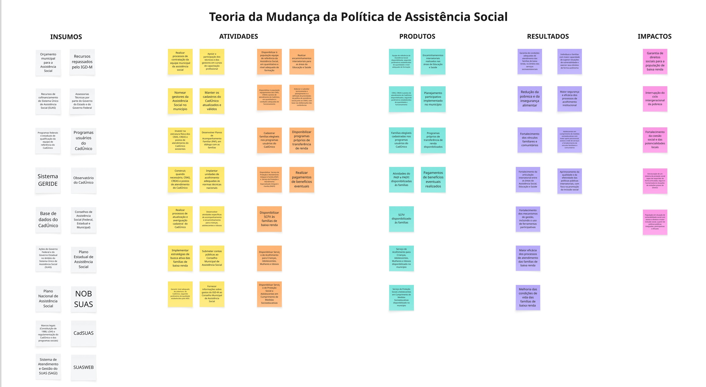

Como o município, articulado ao SUAS e operando o CadÚnico, presta proteção social, oferta serviços e benefícios, e contribui para a interrupção do ciclo intergeracional de pobreza no Espírito Santo.

A política municipal de assistência social opera sob o Sistema Único de Assistência Social (SUAS), com forte responsabilidade municipal na execução direta dos serviços. O CadÚnico — gerido pelos municípios — é a principal porta de entrada para programas de transferência de renda e para a identificação de famílias em situação de vulnerabilidade.
Esta teoria de mudança parte da premissa de que a interrupção do ciclo intergeracional de pobreza e a garantia efetiva de direitos sociais não acontecem por benefícios isolados, mas pela articulação entre proteção social básica (CRAS, PAIF, SCFV), proteção especial (CREAS, acolhimento) e benefícios financeiros — sempre conectada a outras políticas, especialmente Educação e Saúde.
O mapa enfatiza um elemento crítico do setor: o cadastro atualizado e a busca ativa. Sem informação confiável sobre quem precisa de proteção, mesmo os melhores programas não chegam às famílias certas.
Para gestores: a qualidade do CadÚnico é insumo crítico de toda a política. Investir em sua manutenção (atualização, averiguação, busca ativa) é precondição para que tudo o que vem depois funcione.
Para avaliadores: esta política tem múltiplos atores na linha de frente (CRAS, CREAS, Acolhimento, Conselho Tutelar) e múltiplos programas (PAIF, PAEFI, SCFV, transferências). Avaliações úteis costumam recortar uma cadeia específica, em vez de tentar abarcar tudo de uma vez.
Para órgãos de controle: o mapa explicita o vínculo entre cadastro, oferta de serviços e impactos. A coerência dessa cadeia é uma boa pergunta de auditoria.
{kind=link}